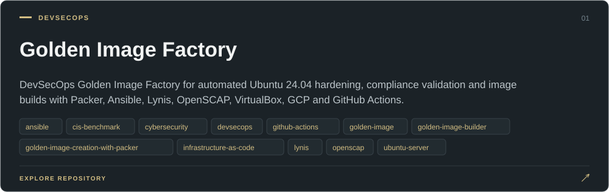
YASSER KOUIDER / CYBERSECURITY
Breaking systems to understand them.Automating what it takes to defend them.
Cybersecurity Engineering Student — SOC operations, detection engineering, security automation, DevSecOps and hands-on investigation.
BUILDING NOW
n8n-Powered End-to-End Phishing Detection Workflow
Email security · phishing detection · enrichment · automated response
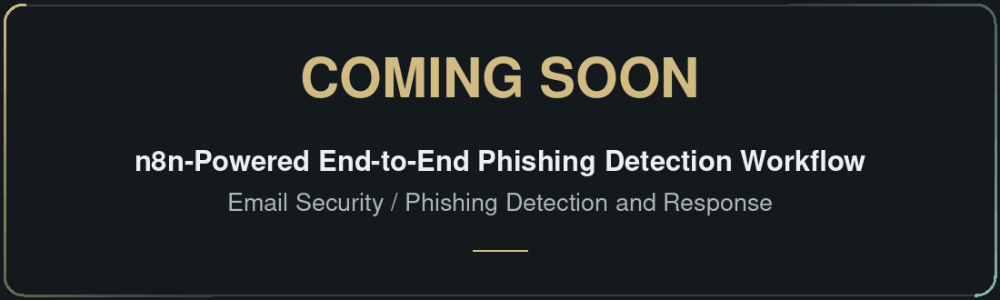
SELECTED WORK
Projects
Hover a featured project to reveal the architecture.Tap “Architecture” to inspect the system design.
01 / DEVSECOPS
Struggling to guarantee consistent security compliance across local and cloud environments?
02 / SOC AUTOMATION
Tired of chasing the same false positives and manually enriching hundreds of alerts every single day?
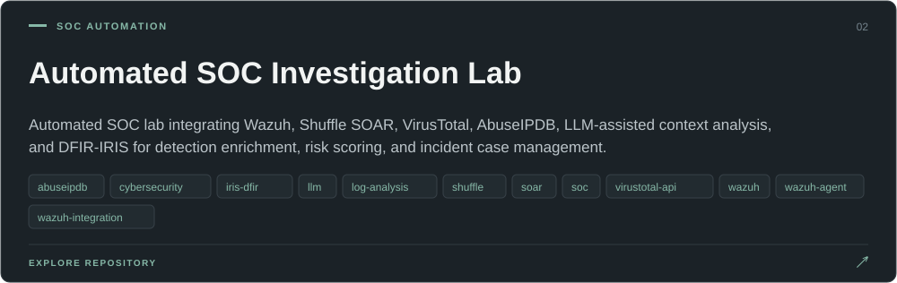
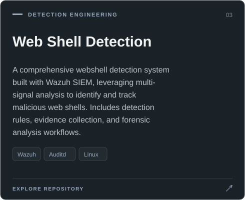
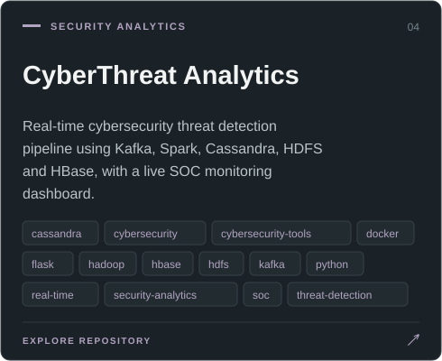
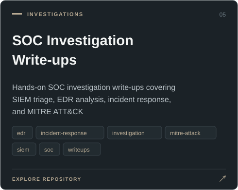
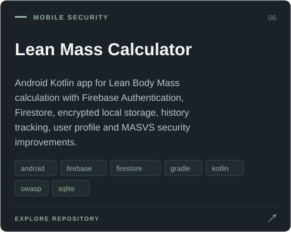
Certifications
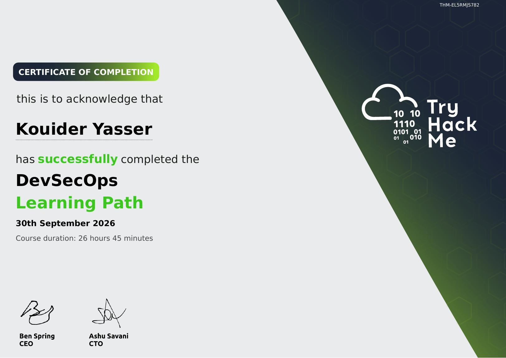
VIEW CERTIFICATE ↗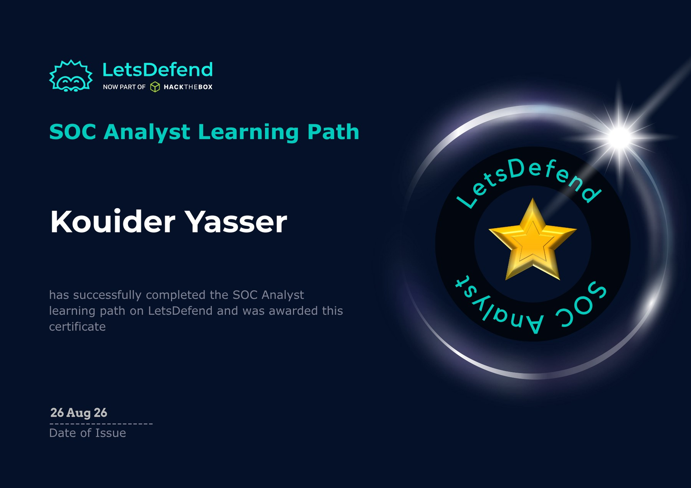
VIEW CERTIFICATE ↗LETSDEFEND
SOC Analyst Learning Path
Security operations and alert investigation
Verify on LetsDefend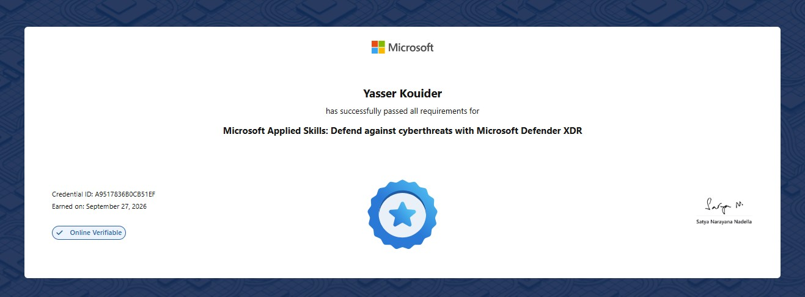
VIEW CERTIFICATE ↗MICROSOFT APPLIED SKILLS
Defend against cyberthreats with Microsoft Defender XDR
Credential ID: A9517836B0CB51EF
Verify on Microsoft Learn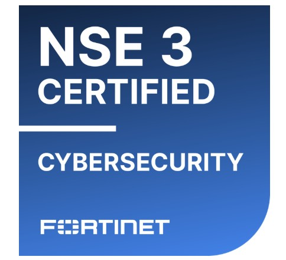
VIEW BADGE ↗LET’S CONNECT
Let’s work on real security problems.
Open to a six-month cybersecurity internship starting January or February 2027.